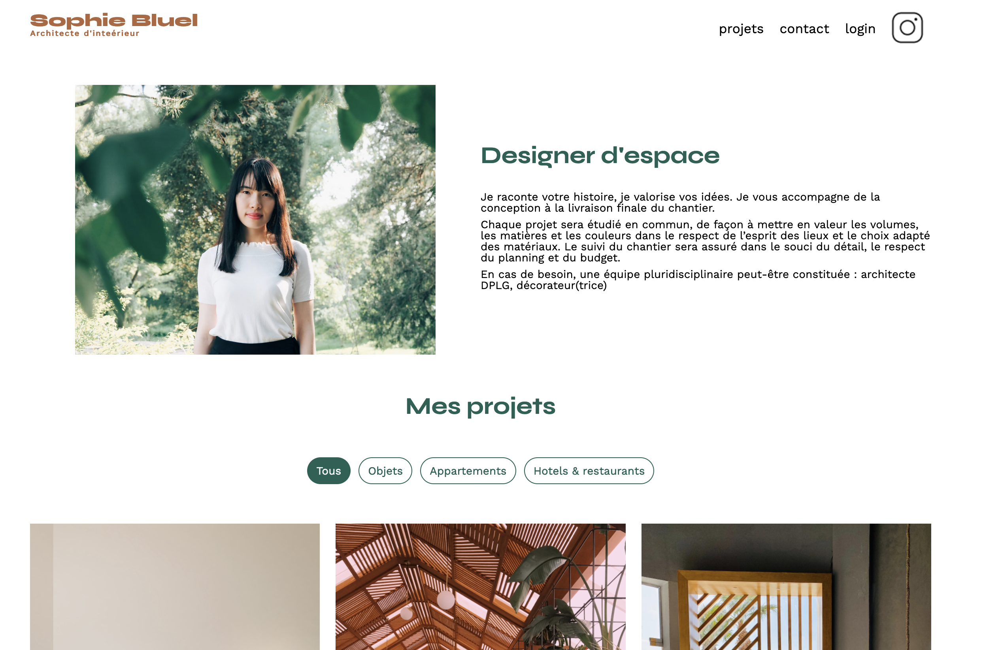
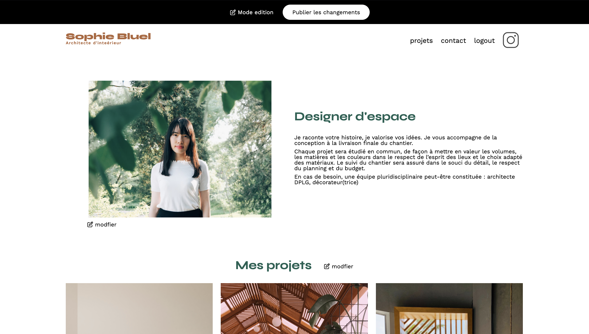
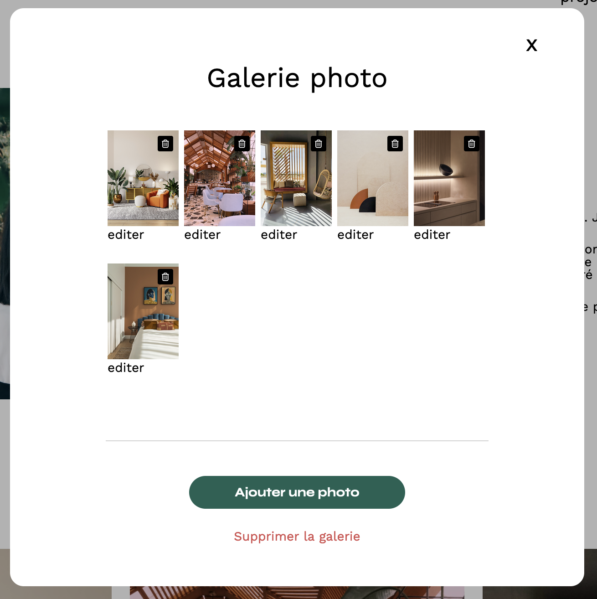
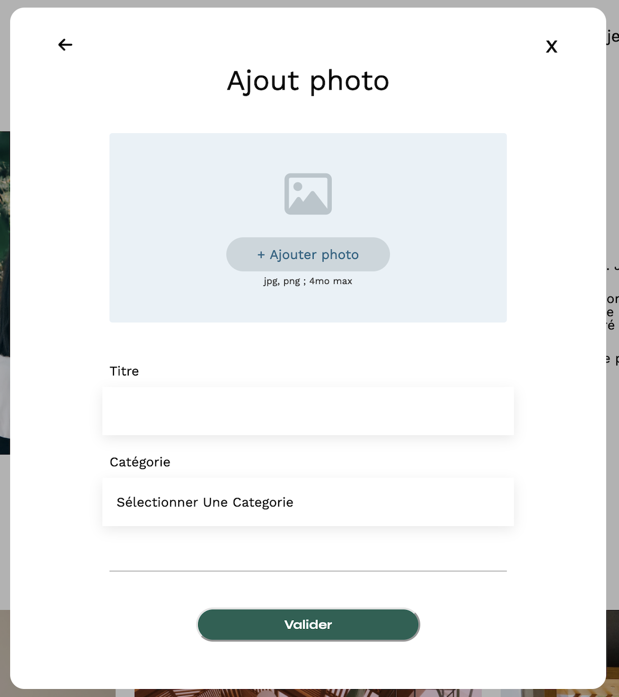
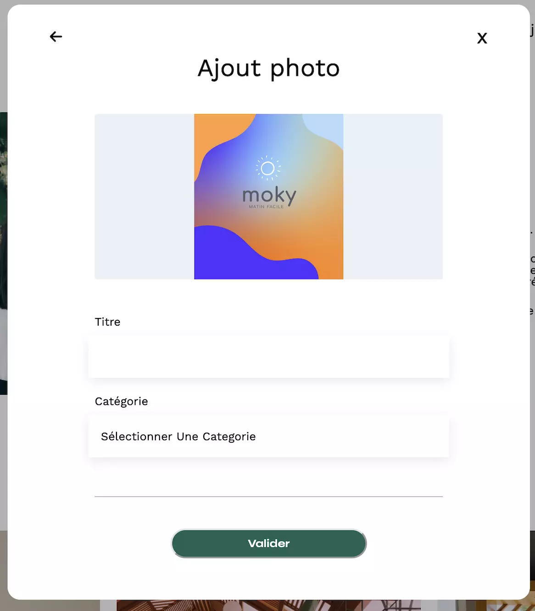

Sur ce projet j'ai étais envoyé en renfort comme développeur front-end d’une équipe qui travaille sur la conception du site portfolio d’une architecte d’intérieur.
Rôle
Developpeur Front-End
Tâches
Récupération des travaux depuis le back-endRéalisation du filtre des travauxCodez la page de connexionEnvoi d’un nouveau projet au back-end

Ce site a été entièrement développé en utilisant les langages HTML, CSS et JavaScript, en prenant comme base les maquettes fournies par les designers. Plusieurs tâches ont été réalisées pour atteindre le résultat final, telles que la création d'une page de connexion permettant à l'administrateur d'accéder à son interface.

L'administrateur a donc la possibilité d'ajouter et de supprimer des créations depuis l'API. Dans ce projet, toutes les données des travaux de l'architecte sont récupérées dynamiquement sur l'API. Une modale en JavaScript a également été créée pour gérer l'ajout et la suppression des travaux de l'architecte.

Modale

Ajout image

Envoie projet
Cette modale offre la possibilité d'effectuer des modifications nécessaires en temps réel, directement sur la page, sans avoir à la quitter ni à la recharger. Grâce à cette fonctionnalité, les utilisateurs peuvent apporter des ajustements et des changements de manière fluide et instantanée, améliorant ainsi leur expérience d'utilisation.
Ce projet a été plus compliqué à prendre en main, surtout pour la partie JavaScript, car c'était une première pour moi. Il a fallu bien s'imprégner des cours et refaire plusieurs fois les exercices, surtout en ce qui concerne la partie des appels à l'API.
Contact